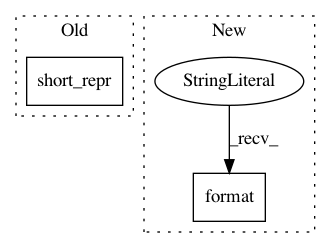

e090bc078395efd951814089e6997ff661f7f729,sos/__main__.py,,workflow_status,#Any#,339
Before Change
elif k == "pending_task":
pending_tasks[v[0]].append(v[1])
else:
env.logger.info("{:20s} \t{}".format(k, short_repr(v)))
except Exception as e:
raise ValueError("Unrecognizable status line {}: {}".format(line, e))
//
After Change
raise ValueError("Unrecognizable status line {}: {}".format(line, e))
//
env.logger.info("{:15s} \t{}".format("Workflow ID:", os.path.basename(workflow)[:-7]))
env.logger.info("{:15s} \t{}".format("Command:", re.sub(r"\s+", " ", interpolate(
"sos run ${script} ${workflow if workflow else ""} "
"${("-c " + config_file) if config_file else ""} "
"${("-s " + sig_mode) if sig_mode not in ("", "default") else ""} "
"${("-q " + default_queue) if default_queue else ""} "
"${("-d " + output_dag) if output_dag not in ("", None) else ""} "
"${("-b " + " ".join(bin_dirs)) if bin_dirs and bin_dirs != ["~/.sos/bin"] else ""} "
"${("-j " + str(max_procs)) if max_procs != 4 else ""} "
"${("-J " + str(max_running_jobs)) if max_running_jobs else ""} "
"${("-t " + " ".join(targets)) if targets else ""} "
"${" ".join(workflow_args)} "
, "${ }", res))))
env.logger.info("{:15s} \t{}".format("Working dir:", res["workdir"]))
//
for k,v in pending_tasks.items():
In pattern: SUPERPATTERN
Frequency: 3
Non-data size: 2
Instances
Project Name: vatlab/SoS
Commit Name: e090bc078395efd951814089e6997ff661f7f729
Time: 2017-05-16
Author: ben.bog@gmail.com
File Name: sos/__main__.py
Class Name:
Method Name: workflow_status
Project Name: vatlab/SoS
Commit Name: dd5dd1abff53aa57db42b0a1777c3971eb094f9e
Time: 2017-02-13
Author: ben.bog@gmail.com
File Name: sos/target.py
Class Name: RuntimeInfo
Method Name: __init__
Project Name: vatlab/SoS
Commit Name: dd5dd1abff53aa57db42b0a1777c3971eb094f9e
Time: 2017-02-13
Author: ben.bog@gmail.com
File Name: sos/target.py
Class Name: RuntimeInfo
Method Name: __setstate__